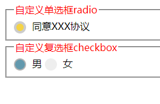

最简单清晰的纯css实现的单选框radio复选框checkbox自定义样式
效果展示
demo链接下载(喜欢就送颗真心撒)：
自定义单选框radio复选框checkbox
/*公共部分——按钮样式*/
label::before {
content: "";
display: inline-block;
width: 20px;
height: 20px;
background: #EEE;
vertical-align: middle;
-webkit-border-radius: 50%;
margin-right: 10px;
-webkit-box-sizing:border-box;
-webkit-transition:background ease-in .5s
}
input[type="checkbox"]:checked+label::before{
background-color: #6399ae;
border: 2px #b3b3b3 solid;
}
/*自定义单选框radio样式*/
.login_agree {
position: relative;
}
.login_agree input[type="radio"]{
display: none;
}
.login_agree input[type="radio"]:checked+label::before{
background-color: #f4d345;
border: 4px #ccc solid;
}
/*自定义复选框checkbox*/
.sex_checkbox{
position: relative;
}
.sex_checkbox input[type="checkbox"]{
display: none;
}
/*自定义复选框checkbox需要用js控制，二者只可选择其一*/
$('.sex_checkbox').find('input[type=checkbox]').bind('click', function(){
$('.sex_checkbox').find('input[type=checkbox]').not(this).attr("checked", false);
});